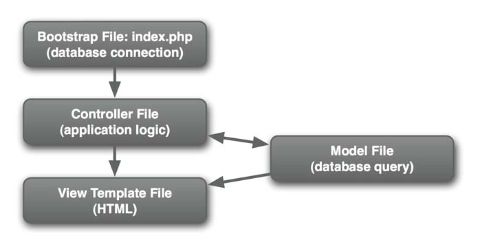
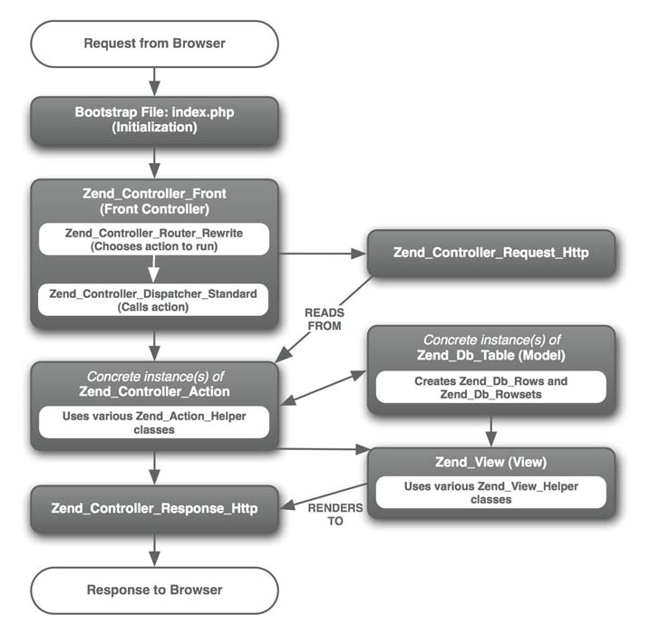

Zend
Table of Contents
1 模块
| 核心 | |
|---|---|
| Zend_Config | 从配置文件中读取数据 |
| Zend_Controller | |
| Zend_Db | |
| Zend_Filter | 输入数据过滤，过滤、转换输入数据中的特殊格式和字符 |
| Zend_Registry | |
| Zend_Validate | 输入数据验证，验证输入数据的格式是否符合要求 |
| Zend_View | |
| 访问控制 | |
| Zend_Acl | 权限控制，用基于角色的 ACL 为用户授权 |
| Zend_Auth | 用户身份验证 |
| Zend_Session | |
| 高级 | |
| Zend_Cache | 提供缓存的一般方案，包括硬盘、数据库和 APC 公用内存 |
| Zend_Mail | |
| Zend_Mime | |
| Zend_Pdf | 创建 PDF 文档 |
| Zend_Search | 基于 Apache Lucene 搜索引擎，支持搜索结果排名 |
| 进程间通信 | |
| Zend_Json | |
| Zend_Rest | |
| Zend_Soap | |
| Zend_XmlRpc | |
| 国际化 | |
| Zend_Date | |
| Zend_Locale | |
| Zend_Measure | |
| HTTP | |
| Zend_Http_Client | 从其他网站和服务收集数据 |
| Zend_Http_Server | |
| Zend_Uri | |
| Web 服务 | |
| Zend_Feed | Rss |
| Zend_Gdata | |
| Zend_Service_Amazon | |
| Zend_Service_Flickr | |
| Zend_Service_Yahoo |
2 MVC
2.1 图示
一般 PHP 应用的 MVC 架构： 
Zend 的 基础 MVC 架构： 
2.2 Model
- Zend_Db 提供了面向对象风格的、数据库独立的读取数据方法；
2.3 View
- 与 Smarty 等模板引擎不同，Zend 的模板是由 PHP 编写的；
- Zend_View 提供了 helper 系统，用于创建可复用的显示功能代码；
3 Bootstrap
最简化
require_once('Zend/Loader.php'); Zend_Loader::registerAuthoload(); Zend_Controller_Front::run('/path/to/controllers');